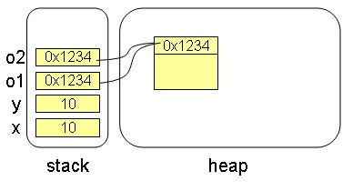
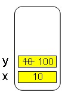
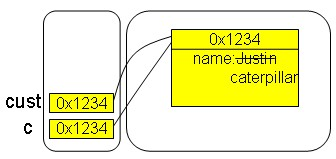

|
|
在 我們沒什麼不同 中談過了，Java的=運算，作用在基本型態與物件上並沒有什麼不同，無論是基本型態變數或類別型態所宣告的變數，使用指定運算時，都是將變數的值複製（指定）給另一個變數。 如果你這麼撰寫程式： int x = 10; int y = x; Object o1 = new Object(); Object o2 = o1; 你作的是將x的值複製給y，所以y的值也是10，而如果o1儲存的值是0x1234，你作的是將0x1234指定給o2，所以o2儲存的值也是0x1234。  只不過Java不讓你直接處理記憶體位址，當你透過o1或o2操作物件時，會根據o1或o2儲存的位址值找到物件真正所在，然後操作它。 當你在方法呼叫時，其實也是這樣的行為，如果你這麼撰寫程式： public void go() { int x = 10; some(x); System.out.println(x); } private void some(int y) { y = 100; } 呼叫some()方法時，你作的是將x的值指定給參數y，而之後y改為100：  這種行為叫作Call by value。當作用於基本型態時，大部份人都不會有疑問。但下面這個程式會有人發出聲音： public void go() { Customer c = new Customer(); c.name = "Justin"; some(c); System.out.println(c.name); } private void some(Customer cust) { cust.name = "caterpillar"; } 執行完go()方法之後，會顯示"caterpillar"，通常學過C++的，會有人說，這種叫作Call by reference，不過並不是事實，Java沒有Call by reference，Java傳遞參數都只有Call by value。上面的程式，只不過是將c儲存的位址值指定給參數cust：  由於cust與c都是儲存相同的記憶體位址，當透過cust操作物件時，所操作的就是c所參考到的物件，因此改的name屬性也就是同一個物件的name屬性了，所以some()執行結束後，自然顯示c.name時，也就是修改為"caterpillar"的結果。 在Java中當你從方法中return一個物件時，其行為也是類似的，就不再多作說明了。 Java中Call by value，指的是傳遞參數時，一律傳遞變數所儲存的值，無論是基本型態或是類別宣告的型態都一樣，Java中不允許處理記憶體位址，所以用了「參考」這個名稱來作為解釋類別型態所宣告的變數之行為，但這邊的「參考」與C++中所稱之「參考」，是完全不相同的行為，更不會有C++中 參數的傳 值、傳參考、return 的傳值、傳參考 的Call by reference行為。 |